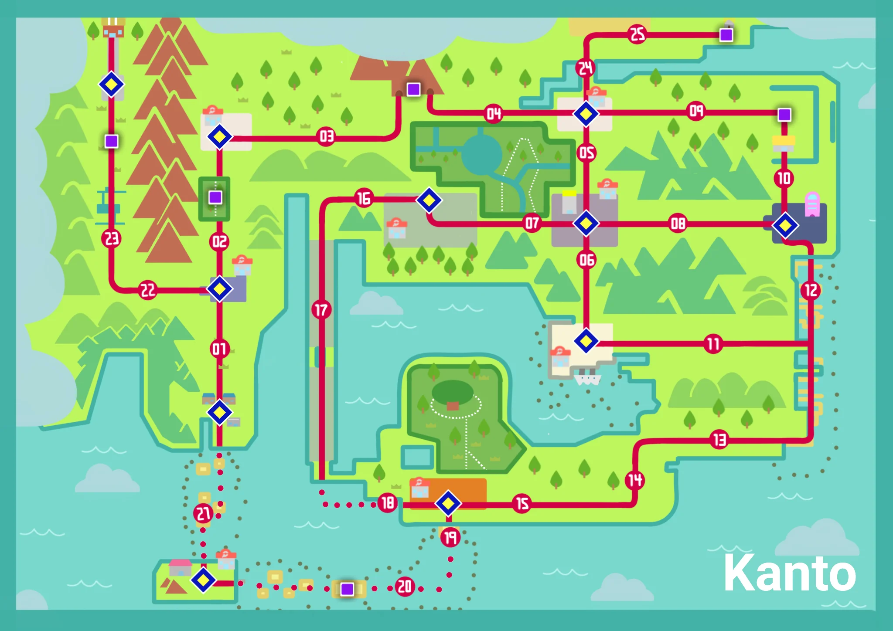
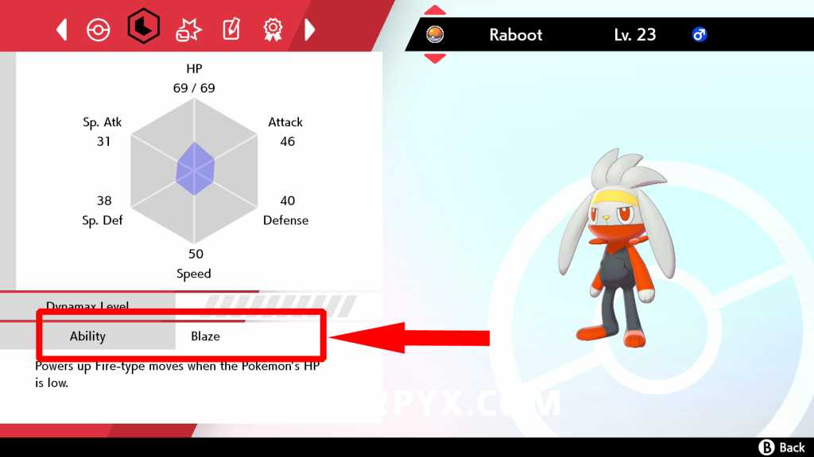
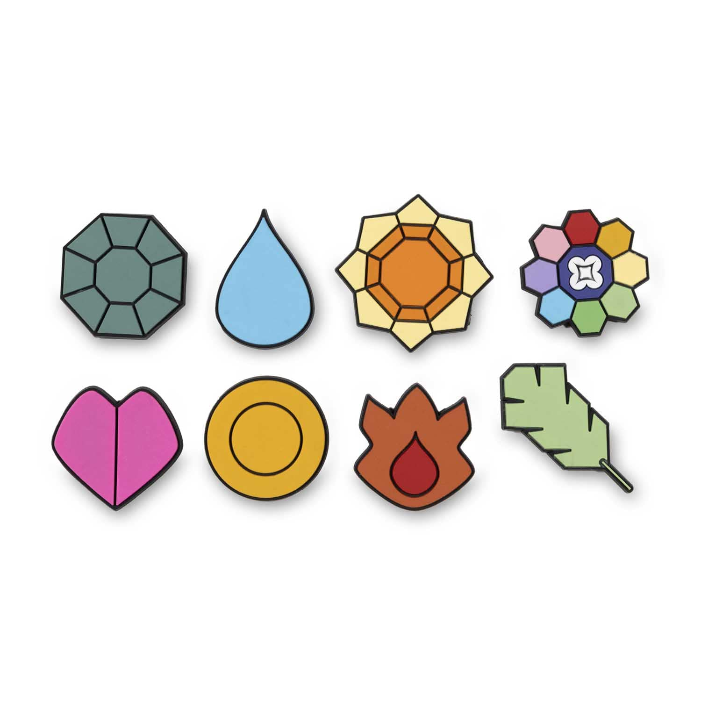

Pokémon es una saga de videojuegos (y un universo multimedia) en la que el jugador asume el papel de un entrenador que recorre distintas regiones habitadas por criaturas llamadas Pokémon. Cada Pokémon pertenece a una o varios tipos (fuego, agua, planta, eléctrico, etc.) y posee habilidades especiales que utiliza para combatir.
El objetivo principal del juego es capturar Pokémon, entrenarlos y formar un equipo equilibrado para enfrentarse a otros entrenadores, superar los gimnasios de cada región y, finalmente, convertirse en Campeón de la Liga Pokémon. A lo largo de la aventura también se descubre la historia del mundo, se interactúa con personajes importantes y se desvelan los planes de organizaciones villanas que intentan usar el poder de los Pokémon con fines egoístas.
Además de la aventura principal, la saga se basa en la exploración, la colección y la estrategia. Existen cientos de especies distintas, cada una con sus propias estadísticas, evoluciones y formas, lo que invita al jugador a experimentar, intercambiar con otros y completar la Pokédex, una enciclopedia que registra toda la información sobre los Pokémon encontrados.
En resumen, Pokémon combina rol, colección y combates por turnos en un mundo colorido donde la amistad con tus criaturas y la planificación de tu equipo son la clave para progresar.
Los combates en Pokémon se desarrollan por turnos. Cada entrenador envía a un Pokémon al campo y, en cada ronda, ambos eligen una acción: atacar, cambiar de Pokémon, usar un objeto o intentar huir (en combates salvajes). El orden de actuación depende principalmente de la Velocidad de cada Pokémon.
Cada Pokémon tiene Puntos de Salud (PS). Cuando estos llegan a cero, el Pokémon queda debilitado y debe ser sustituido por otro del equipo. Los ataques consumen Puntos de Poder (PP) y pueden ser de distintos tipos, lo que influye en su efectividad según el tipo del rival.

El sistema de tipos es una de las bases estratégicas del combate. Por ejemplo, los ataques de tipo Agua son fuertes contra los de tipo Fuego, pero débiles contra los de tipo Planta. Usar ataques con ventaja de tipo puede duplicar el daño, mientras que atacar a un tipo resistente lo reduce considerablemente.
Además del daño directo, existen cambios de estado como:
Cada Pokémon también posee una habilidad que puede activar efectos especiales durante el combate, como aumentar estadísticas, evitar ciertos ataques o modificar el clima.

En conjunto, los combates combinan decisiones tácticas, conocimiento de tipos y gestión del equipo, haciendo que cada enfrentamiento sea sencillo de entender, pero con una gran profundidad estratégica.
VolverCada Pokémon posee una habilidad, que es un efecto pasivo que se activa automáticamente durante el combate o al entrar en él. Las habilidades pueden influir en muchos aspectos: aumentar estadísticas, cambiar el clima, impedir ciertos estados alterados o modificar la efectividad de los ataques.
Por ejemplo:
Algunos Pokémon pueden tener más de una habilidad posible, y en juegos más recientes también existe la habilidad oculta, una habilidad especial que solo se obtiene mediante métodos concretos como eventos, incursiones o crianza.
Las habilidades añaden una capa estratégica muy importante, ya que pueden cambiar por completo el desarrollo de un combate. Elegir un Pokémon no solo depende de su tipo o ataques, sino también de cómo su habilidad complementa al resto del equipo.
Cada Pokémon pertenece a uno o dos tipos, que determinan sus fortalezas y debilidades en combate. Por ejemplo, un Pokémon de tipo Fuego es fuerte contra Planta pero débil frente a Agua. Conocer los tipos es clave para planificar ataques y elegir tu equipo.

Conocer estos tipos permite planificar ataques, capturar Pokémon estratégicamente y diseñar un equipo equilibrado capaz de enfrentar cualquier desafío.

Capturar Pokémon es uno de los elementos más importantes de la saga. Para atrapar un Pokémon necesitarás Poké Balls, que son esferas diseñadas para contenerlo. Existen varios tipos de Poké Balls, cada una con sus características:
Para capturar Pokémon raros o legendarios, suele ser necesario:
Con estos consejos podrás completar tu equipo y la Pokédex, que es la meta de todo entrenador.
La evolución es el proceso por el cual un Pokémon cambia de forma y se vuelve más fuerte. Al evolucionar, aumentan sus estadísticas y, en muchos casos, aprende nuevos movimientos o cambia su tipo.
En algunas generaciones existen formas alternativas y evoluciones temporales, como:
La evolución es una parte fundamental del progreso, ya que permite fortalecer tu equipo y desbloquear todo el potencial de cada Pokémon.

Entrenar a un Pokémon consiste en hacerlo más fuerte para que rinda mejor en combate. A medida que gana experiencia y sube de nivel, aumentan sus estadísticas principales:
Cada especie tiene un crecimiento distinto, por lo que algunos Pokémon destacan por su fuerza, otros por su resistencia o por su rapidez.
Los Pokémon ganan experiencia al combatir y derrotar a otros Pokémon. Al subir de nivel:
Cada Pokémon tiene una naturaleza, que influye en su crecimiento, aumentando una estadística y reduciendo otra. Por ejemplo, una naturaleza puede subir el Ataque y bajar la Defensa, haciendo al Pokémon más ofensivo.
Aunque estos sistemas son más importantes en el juego competitivo, entenderlos ayuda a sacar el máximo partido a tu equipo.
El entrenamiento es clave para preparar a tus Pokémon de cara a los gimnasios, la Liga y los combates más difíciles del juego.

A lo largo de la aventura, el jugador debe enfrentarse a los Gimnasios, que son edificios dirigidos por un Líder de Gimnasio especializado en un tipo de Pokémon. Cada victoria otorga una Medalla, que sirve como prueba de progreso y permite avanzar en la historia, además de desbloquear el uso de ciertas habilidades fuera de combate.
Para enfrentarte al líder, normalmente debes derrotar primero a varios entrenadores dentro del gimnasio. Cada líder utiliza un equipo centrado en un tipo concreto, por lo que conocer las ventajas y debilidades de los tipos es fundamental para vencer.
Una vez obtenidas todas las medallas, se accede a la Liga Pokémon, donde esperan los entrenadores más fuertes de la región:

Superar la Liga es el objetivo principal de la historia en la mayoría de juegos y marca la culminación del viaje del entrenador.
Los Pokémon legendarios y singulares son criaturas únicas dentro del mundo Pokémon. Suelen ser más poderosos que los Pokémon normales y suelen estar ligados a la historia del juego, siendo parte de eventos especiales, mitos de la región o tramas de los videojuegos.
Para capturarlos con éxito:
Capturar legendarios no solo añade poder a tu equipo, sino que también es esencial para completar la Pokédex y descubrir toda la historia de la región.